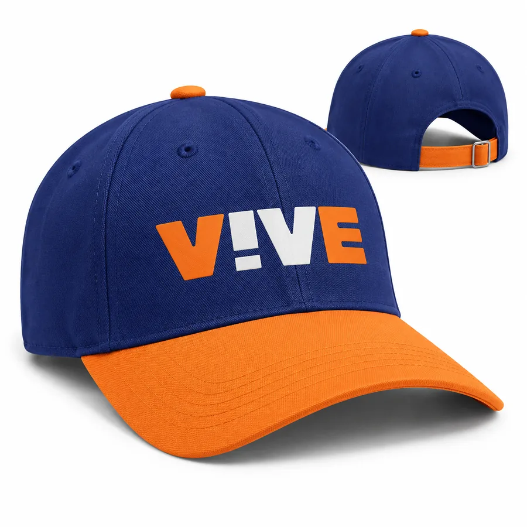

VIVE moves like it is charged: quick, snappy, and physical, never floaty.
Hover each sample

Tokens
| Token | Value | Use |
|---|---|---|
--ease-out |
cubic-bezier(.23, 1, .32, 1) |
Hovers, panels, and reveals |
--ease-pop |
cubic-bezier(.2, 1.5, .4, 1) |
Brand pops: cans, VIVI, and the cart count |
Rules
- Hovers never move their own hit area. A card or image lifts an inner
.liftinside a static.lift-zone. See Hover lift. - Every hover waits about 120ms before reversing, so a pointer resting on an edge does not flicker.
- Durations stay short: 140 to 260ms for interface feedback, up to 700ms for a reveal.
- Always-turning stars carry a pause button. See Motion toggle.
- Reduced motion keeps meaning, drops movement. Under
prefers-reduced-motion: reduce, rises become fades and turning stops.